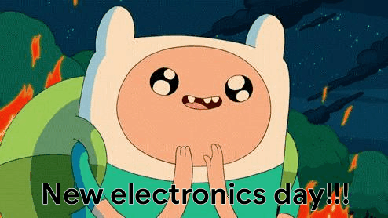

What's a Raspberry Pi?
The Raspberry Pi is a low cost, credit-card sized computer that plugs into a computer monitor or TV, and uses a standard keyboard and mouse. It is a capable little device that enables people of all ages to explore computing, and to learn how to program in languages like Scratch and Python. It’s capable of doing everything you’d expect a desktop computer to do, from browsing the internet and playing high-definition video, to making spreadsheets, word-processing, and playing games.
What’s more, the Raspberry Pi has the ability to interact with the outside world, and has been used in a wide array of digital maker projects, from music machines and parent detectors to weather stations and tweeting birdhouses with infra-red cameras. We want to see the Raspberry Pi being used by kids all over the world to learn to program and understand how computers work.
tl;dr
It's a tiny, cheap, and insanely versatile computer.
Raspberry Pi 3 Model B+ Specs
- Broadcom BCM2837B0, Cortex-A53 (ARMv8) 64-bit SoC @ 1.4GHz
- 1GB LPDDR2 SDRAM
- 2.4GHz and 5GHz IEEE 802.11.b/g/n/ac wireless LAN, Bluetooth 4.2, BLE
- Gigabit Ethernet over USB 2.0 (maximum throughput 300 Mbps)
- Extended 40-pin GPIO header
- Full-size HDMI
- 4 USB 2.0 ports
- CSI camera port for connecting a Raspberry Pi camera
- DSI display port for connecting a Raspberry Pi touchscreen display
- 4-pole stereo output and composite video port
- Micro SD port for loading your operating system and storing data
- 5V/2.5A DC power input
- Power-over-Ethernet (PoE) support (requires separate PoE HAT)
Unboxing

Unboxing

peripheral setup
- apply heatsinks
- insert (preformatted) sd card
- connect keyboard, mouse, monitor, & ethernet
- connect power
- boot
first boot
image of initial boot stuff
raspbian environment
stuff
linux basics
stuff
desktop vs headless
stuff